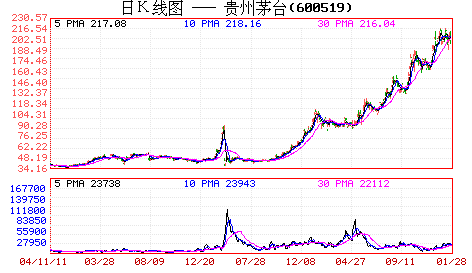

前面说了很多理论上的东西，现在用一个实际的股票来说明一下具体的用法。就用茅台吧，边喝茅台边上课。这里先假设所有看的人都能找到茅台上市以来的周线和日线图。前面说过两条均线间“吻”的三种方式，其中的湿吻是最明显的缠绕例子，而飞吻和唇吻是缠绕的特殊例子，在均线操作系统中所指的缠绕，包括这三种吻。而从实际的比例看，湿吻出现的几率是最大的，但在长期均线系统中，例如周线、月线等，唇吻的例子比例也很大。先复习一下相关定义：
飞吻：短期均线略略走平后继续按原来趋势进行下去。
唇吻：短期均线靠近长期均线但不跌破或升破，然后按原来趋势继续下去。
湿吻：短期均线跌破或升破长期均线甚至出现反复缠绕，如胶似漆。
女上位：短期均线在长期均线之上。
男上位：短期均线在长期均线之下。
第一类买点：用比较形象的语言描述就是由男上位最后一吻后出现的背驰式下跌构成。
第二类买点：女上位第一吻后出现的下跌构成。
现在，先打开茅台的周线图，在茅台快6年的周线图上，用5周与10周均线构成的买卖系统，只有第一类和第二类买点各一个，可见，在周线图上，按均线系统构成的买点并不常见，一旦出现必须珍惜。仔细分析：2002年4月19日那周，茅台进入男上位，其后在2002年7月9日那周进入男上位的第一吻，前面已经说过，这第一吻后的下跌一般不会构成买点，必须是至少第二吻以后。其第二吻出现在2003年2月14日那周，是典型的湿温，其后在下跌并没构成背驰，不符合第一类买入点的原则。然后在2003年6月27日那周构成第三吻，是一个不太强烈的湿吻，其后的下跌就出现了明显的背驰走势，在MACD图上，绿柱子比上一次的明显缩短，而低位却低于上次绿柱子出现时的低位。如何判断背驰走势结束，最简单的就是当绿柱子缩短，而股价继续创新低，这次，明显地发生在2003年9月26日这一周，意味着底部出现，第一类买点构造完成，可以大举介入了。
第一类买点出现后，茅台也正常地改变体位，进入女上位，一直到2004年6月4日那周出现女上位后的第一吻，其后的下跌构成周线上的第二类买点。这里有一个很重要的技巧，就是第二类买点如何精确地把握，由于在周线女上位后第一吻的调整不构成明显的下跌走势，因此对于第一类买点的背弛走法就无法出现，这时候就要降低K线级别，从日线图上寻找最佳买点，这里给出一个缠中说禅买点定律：大级别的第二类买点由次一级别相应走势的第一类买点构成（该定律是有专利的，发明权一定要明确，这一点必须明确，否则以后本ID不会再说任何定律了，该定律一定没有任何人发现过，其他本ID已发现的定律也一样，哪天本ID心情好再说几个，但前提是不能让本ID发现有盗版的，各位也应该和本ID一起监督）。例如，周线上的第二类买点由日线上相应走势的第一类买点构成。有了这个缠中说禅买点定律，所有的买点都可以归结到第一类买点。
对于茅台，2004年6月4日那周出现女上位后第一吻，对应在日线图上是明显的男上位走势，该走势其中出现三次吻，分别在2004年4月29日、5月18日、6月1日，都是典型的湿吻，但前两次其后的下跌都没有出现背驰，只有第三次，出现明显的背驰性走势，6月18日创下低点后，MACD的绿柱子明显比前面的要缩短，这就构成了日线上的第一类买点，而这个买点，在周线上就是第二类买点。注意，后面由于除权，价位上似乎比这个要低了，其实并没有。
站在周线角度，茅台的买点就这两个了，而其后的卖点至今没出现，如果当时根据这两个买点介入的，目前应该继续持有，直到卖点出现。但是，这是一种针对特别大资金的玩法法，例如50亿以上，对于资金量一般的，例如10亿以下的，有一种增加资金流动性的玩法，就是充分利用日线的卖点回避大的调整，虽然这种调整站在周线的角度不一定要参与。缠中说禅短差程序就是：大级别买点介入的，在次级别第一类卖点出现时，可以先减仓，其后在次级别第一类买点出现时回补。对于周线买点介入的，就应该利用日线的第一类卖点减仓，其后在第一类买点回补。对于茅台，分析如下：
在周线2003年9月26日这一周根据第一类买点介入的，其后的女上位出现九次吻，前八次都没构成背驰走势，而第九次出现在2004年3月26日，其后的上涨出现明显背驰，4月8日的高位对应的MACD红柱子并没有相应创出新高，这就构成日线上的第一类卖点。其后的第一类买点出现在6月18日，然后的第一类卖点出现在10月27日，然后第一类买点出现在12月22日，下一个第一类卖点出现在2005年4月26日，接着的第一类买点出现在2005年12月13日，下面的第一类卖点至今没出现，也就是说，即使是站在日线的角度，2005年12月13日介入的茅台，根本就没有出现卖点，唯一正确的就是坚决持有。当然，如果资金量小，不是按周线的，第一类、第二类买点都是最多按日线的，就可以相应在30分钟等更小的级别内找到第一类卖点而弄出短差来，那就太细了，各位自己研究去。
要把握好这个均线构成的买卖系统，必须深刻理解缠中说缠买点定律：大级别的第二类买点由次一级别相应走势的第一类买点构成。如果资金量不特别巨大，就要熟练缠中说禅短差程序：大级别买点介入的，在次级别第一类卖点出现时，可以先减仓，其后在次级别第一类买点出现时回补。这样才能提高资金的利用率。注意，该定律和程序都要注意版权，任何人都可以用，也不收任何版权费，但这个版权必须要明确，否则本ID心情不好，就没兴趣再说任何定律、程序了。严惩所有企图盗版去招摇撞骗的人。各位要多看图，根据相应的资金量以及性格去定自己的操作级别，然后具体是熟练，否则就是纸上谈兵，毫无意义了.